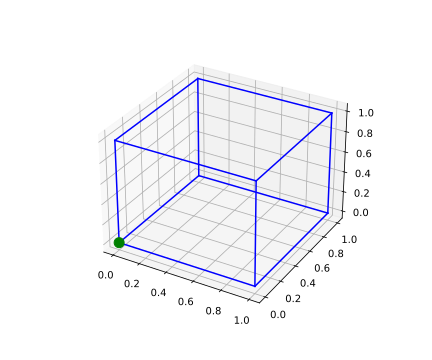

If \(\Psi\) is a \(k\)-chain of class \(\mathscr C''\) in an open set \(V\subset R^m\) and if \(\omega\) is a \((k-1)\)-form of class \(\mathscr C'\) in \(V\), then \[\int_{\Psi}d\omega=\int_{\partial\Psi}\omega\]
The case \(k=m=1\) is the fundamental theorem of calculus: If \(f\in \mathscr R\) on \([a,b]\) and if there is a differentiable function \(F\) on \([a,b]\) such that \(F'=f\), then \[\int_{a}^{b}f(x)dx=F(b)-F(a)\] Let \(\varepsilon>0\), choose a partition \(P=\{x_0,\cdots,x_n\}\) of \([a,b]\) so that \[U(P,f)-L(P,f)<\varepsilon\] let point \(t_i\in[x_{i-1},x_i]\) such that \[F(x_i)-F(x_{i-1})=f(t_i)\Delta x_i\] for \(i=1,\cdots,n\) Thus \[\sum_{i=1}^{n}f(t_i)\Delta x_i=F(b)-F(a)\] Then \[\Biggl|F(b)-F(a)-\int_{a}^{b}f(x)dx\Biggr|\leq \Biggl|F(b)-F(a)-\sum_{i=1}^{n}f(t_i)\Delta x_i\Biggr|+\Biggl|\sum_{i=1}^{n}f(t_i)\Delta x_i-\int_{a}^{b}f(x)dx\Biggr|<0+\varepsilon=\varepsilon\] Then then \[\int_{a}^{b}f(x)dx=F(b)-F(a)\]
The case \(k=m=2\) is Green’s theorem, which gives the relationship between a line integral around a simple closed curve \(C\) and a double integral over the plane region \(D\) bounded by \(C\). It is the two-dimensional special case of Stokes’ theorem. For the Green’s theorem (Circulation-Curl or Tangential Form) Let \(C\) be a positively (Counterclockwise) oriented, piecewise smooth and simple closed curve in a plane, and let \(D\) be the region bounded by \(C\). If \[\mathbf F(x,y)=L(x,y)\mathbf i+M(x,y)\mathbf j\] are functions of \((x, y)\) defined on an open region containing \(D\) and having continuous partial derivatives there, then \[\oint_{C}(Ldx+Mdy)=\iint_D(\frac{\partial M}{\partial x}-\frac{\partial L}{\partial y})dxdy\] where the line integral in the left side is \[Ldx+Mdy=\begin{bmatrix} L\\ M\\ 0\\ \end{bmatrix}\cdot\begin{bmatrix} dx\\ dy\\ 0\\ \end{bmatrix}\] The Curl in the right side is defined as \[\text{curl }\mathbf F=\nabla\times\mathbf F=\begin{vmatrix} \mathbf i&\mathbf j&\mathbf k\\ \frac{\partial}{\partial x}&\frac{\partial}{\partial y}&0\\ L&M&0\\ \end{vmatrix}=\Bigl(\frac{\partial M}{\partial x}-\frac{\partial L}{\partial y}\Bigr)\mathbf k\] which is the rate of change (circulation density) of \(\mathbf F\) over the region \(D\) enclosed by \(C\). If area \(D\) circled by 4 lines \(C=C_1\cup C_2\cup C_3\cup C_4\) where \(C_1\)(bottom) and \(C_3\)(top) are curves connected by vertical lines \(C_2\)(left) and \(C_4\)(right) (possibly of zero length) then \[D=\{(x,y)|a\leq x\leq b,g_1(x)\leq y\leq g_2(x)\}\] where \(g_1\) and \(g_2\) are continuous functions on \([a, b]\) The bottom line integral can be calculated using parametric equations \(x=x, y=g_1(x), a\leq x\leq b\) then \[\int_{C_1}Ldx=\int_{a}^{b}L(x,g_1(x))dx\] With \(C_3\) use the parametric equations \(x=x, y=g_2(x), a\leq x\leq b\) then \[\int_{C_3}Ldx=-\int_{-C_3}Ldx=-\int_{a}^{b}L(x,g_2(x))dx\] The integral over \(C_3\) and \(C_4\) since \(x\) remains constant, \[\int_{C_4}Ldx=\int_{C_2}Ldx=0\] Therefore \[\oint_{C}Ldx=\int_{C_1}Ldx+\int_{C_3}Ldx+\int_{C_4}Ldx+\int_{C_2}Ldx\\ =\int_{a}^{b}L(x,g_1(x))dx-\int_{a}^{b}L(x,g_2(x))dx\] The integral over \(D\) is \[\begin{align} \iint_D(\frac{\partial L}{\partial y})dxdy&=\int_{a}^{b}\int_{g_1(x)}^{g_2(x)}\frac{\partial L}{\partial y}dxdy\\ &=\int_{a}^{b}\Biggl[L(x,g_2(x))-L(x,g_1(x))\Biggr]dx\\ &=-\oint_{C}Ldx \end{align}\] If \(C_1\)(bottom) and \(C_3\)(top) are horizontal lines connected by curves \(C_2\)(left) and \(C_4\)(right) (possibly of zero length) then \[\int_{C_1}Mdy=\int_{C_3}Mdy=0\] The left curve integral can be calculated using parametric equations \(y=y, x=g_1^{-1}(y), a\leq y\leq b\) then \[\int_{C_4}Mdy=-\int_{a}^{b}M(g_1^{-1}(y),y)dy\] With \(C_2\) use the parametric equations \(y=y, x=g_2^{-1}(y), a\leq y\leq b\) then \[\int_{C_2}Mdy=\int_{a}^{b}M(g_2^{-1}(y),y)dy\] The integral over \(D\) is \[\begin{align} \iint_D(\frac{\partial M}{\partial x})dxdy&=\int_{a}^{b}\int_{g_1^{-1}(y)}^{g_2^{-1}(y)}\frac{\partial M}{\partial x}dxdy\\ &=\int_{a}^{b}\Biggl[M(g_2^{-1}(y),y)-M(g_1^{-1}(y), y)\Biggr]dy\\ &=\oint_{C}Mdy \end{align}\] Then \[\oint_{C}(Ldx+Mdy)=\iint_D(\frac{\partial M}{\partial x}-\frac{\partial L}{\partial y})dxdy\]
The Green’s theorem (Flux-Divergence or Normal Form), Let \(C\) be a piecewise smooth, simple closed curve enclosing a region \(R\) in the plane. Let \(\mathbf F = L\mathbf i + M\mathbf j\) be a vector field with \(M\) and \(N\) having continuous first partial derivatives in an open region containing \(D\). Then the outward flux of \(\mathbf F\) across \(C\) equals the double integral of \(\text{div }\mathbf F\) over the region \(R\) enclosed by \(C\). \[\oint_{C}\mathbf F\cdot \mathbf nds=\oint_{C}Ldy-Mdx=\iint_{D}\Bigl(\frac{\partial L}{\partial x}+\frac{\partial M}{\partial y}\Bigr)dxdy\] \[\mathbf F\cdot \mathbf nds=Ldy-Mdx=\begin{vmatrix} \mathbf i&\mathbf j&\mathbf k\\ L&M&0\\ dx&dy&0\\ \end{vmatrix}\] \[\Bigl(\frac{\partial L}{\partial x}+\frac{\partial M}{\partial y}\Bigr)=\nabla\cdot\mathbf F=\begin{bmatrix} \mathbf i\frac{\partial}{\partial x}\\ \mathbf j\frac{\partial}{\partial y}\\ \mathbf k\frac{\partial}{\partial z}\\ \end{bmatrix}\cdot\mathbf F\] which is the rate of change (flux density) over the region \(D\) enclosed by \(C\).
When \(k=m=3\) is the divergence theorem of Gauss:Suppose \(V\) is a subset of \(\mathbb R^{n}\) (in the case of \(n = 3\), \(V\) represents a volume in three-dimensional space) which is compact and has a piecewise smooth boundary \(S\) (also indicated with \(\partial V = S\)). If \(\mathbf F\) is a continuously differentiable vector field defined on a neighborhood of \(V\), then \[\iiint_V(\nabla\cdot\mathbf F)dV=\iint_{\partial V}(\mathbf F\cdot \mathbf n)dS\] where \[\nabla=\mathbf i\frac{\partial}{\partial x}+\mathbf j\frac{\partial}{\partial y}+\mathbf k\frac{\partial}{\partial z}\] The left side is a volume integral over the volume \(V\), the right side is the surface integral over the boundary of the volume \(V\). The closed manifold \(\partial V\) is oriented by outward-pointing normals, and \(\mathbf n\) is the outward pointing unit normal at each point on the boundary \(\partial V\). (\(dS\) may be used as a shorthand for \(\mathbf ndS\).) In terms of the intuitive description above, the left-hand side of the equation represents the total of the sources in the volume \(V\), and the right-hand side represents the total flow across the boundary \(S\). For the vector field \[\mathbf F(x,y,z)=L(x,y,z)\mathbf i+M(x,y,z)\mathbf j+N(x,y,z)\mathbf k\] The rate at which fluid leaves the cube across the bottom face is approximately \[\mathbf F(x,y,z)\cdot(-\mathbf k)\Delta x\Delta y=-N(x,y,z)\Delta x\Delta y\] This is the scalar component of the velocity at \((x, y, z)\) in the direction of the outward normal times the area of the bottom. The rates at which the fluid crosses the other five sides in the directions of their outward normals can be estimated in a similar way. The flow rates may be positive or negative depending on the signs of the components of \(\mathbf F\). We approximate the net flow rate across the cube boundary by summing the flow rates across the six faces as defined by the following dot products:\[ \begin{array}{cc} \text{Bottom:}&\mathbf F(x,y,z)\cdot(-\mathbf k)\Delta x\Delta y=-N(x,y,z)\Delta x\Delta y\\ \text{Top:}&\mathbf F(x,y,z+\Delta z)\cdot(\mathbf k)\Delta x\Delta y=N(x,y,z+\Delta z)\Delta x\Delta y\\ \text{Left:}&\mathbf F(x,y,z)\cdot(-\mathbf i)\Delta y\Delta z=-L(x,y,z)\Delta y\Delta z\\ \text{Right:}&\mathbf F(x+\Delta x,y,z)\cdot(\mathbf i)\Delta y\Delta z=L(x+\Delta x,y,z)\Delta y\Delta z\\ \text{Front:}&\mathbf F(x,y,z)\cdot(-\mathbf j)\Delta x\Delta z=-M(x,y,z)\Delta x\Delta z\\ \text{Back:}&\mathbf F(x,y+\Delta y,z)\cdot(\mathbf j)\Delta x\Delta z=M(x,y+\Delta y,z)\Delta x\Delta z\\ \\ \text{Top+Bottom:}&(N(x,y,z+\Delta z)-N(x,y,z))\Delta x\Delta y\approx(\frac{\partial N}{\partial z}\Delta z)\Delta x\Delta y\\ \text{Left+Right:}&(L(x+\Delta x,y,z)-L(x,y,z))\Delta y\Delta z\approx(\frac{\partial L}{\partial x}\Delta x)\Delta y\Delta z\\ \text{Front+Back:}&(M(x,y+\Delta y,z)-M(x,y,z))\Delta x\Delta z\approx(\frac{\partial M}{\partial y}\Delta y)\Delta x\Delta z\\ \text{Total:}&(\frac{\partial L}{\partial x}+\frac{\partial M}{\partial y}+\frac{\partial N}{\partial z})\Delta x\Delta y\Delta z \end{array}\] The divergence of a vector field \[\mathbf F(x,y,z)=L(x,y,z)\mathbf i+M(x,y,z)\mathbf j+N(x,y,z)\mathbf k\] at the point \((x,y,z)\) is \[\text{div }\mathbf F=\frac{\partial L}{\partial x}+\frac{\partial M}{\partial y}+\frac{\partial N}{\partial z}=\nabla\cdot\mathbf F\]
from mpl_toolkits.mplot3d import Axes3D
import matplotlib.pyplot as plt
import numpy as np
from itertools import product, combinations
fig = plt.figure()
ax = fig.gca(projection='3d')
ax.set_aspect("auto")
# draw cube
r = [0, 1]
for s, e in combinations(np.array(list(product(r, r, r))), 2):
if np.sum(np.abs(s-e)) == r[1]-r[0]:
ax.plot3D(*zip(s, e), color="b")
# draw sphere
#u, v = np.mgrid[0:2*np.pi:20j, 0:np.pi:10j]
#x = np.cos(u)*np.sin(v)
#y = np.sin(u)*np.sin(v)
#z = np.cos(v)
#ax.plot_wireframe(x, y, z, color="r")
# draw a point
ax.scatter([0], [0], [0], color="g", s=100)
# draw a vector
from matplotlib.patches import FancyArrowPatch
from mpl_toolkits.mplot3d import proj3d
#class Arrow3D(FancyArrowPatch):
# def __init__(self, xs, ys, zs, *args, **kwargs):
# FancyArrowPatch.__init__(self, (0, 0), (0, #0), *args, **kwargs)
# self._verts3d = xs, ys, zs
# def draw(self, renderer):
# xs3d, ys3d, zs3d = self._verts3d
# xs, ys, zs = proj3d.proj_transform(xs3d, #ys3d, zs3d, renderer.M)
# self.set_positions((xs[0], ys[0]), (xs[0], #ys[1]))
# FancyArrowPatch.draw(self, renderer)
#a = Arrow3D([0, 0.5], [0, 0.5], [0, 0.5], #mutation_scale=20,
# lw=1, arrowstyle="-|>", color="k")
#ax.add_artist(a)
plt.show()
Stokes’ Theorem relates the circulation of a vector field around the boundary \(C\) of an oriented surface \(D\) in space to a surface integral over the surface \(D\). Piecewise smooth means that it is a finite union of smooth surfaces joining along smooth curves. Let \(D\) be a piecewise smooth, oriented surface having a piecewise smooth boundary curve \(C\). Let \[\mathbf F = M \mathbf i + N\mathbf j + P\mathbf k\] be a vector field whose components have continuous first partial derivatives on an open region containing \(D\). Then the circulation of \(\mathbf F\) around \(C\) in the direction counterclockwise with respect to the surface’s unit normal vector \(\mathbf n\) equals the integral of the curl vector field \(\nabla\times\mathbf F\) over \(D\): \[\oint_{C}\mathbf F\cdot d\mathbf r=\iint_{D}\nabla\times\mathbf F\cdot \mathbf ndS\] The curl integral is independent of the surface and depends only on circulation along the boundary curve.
If \(\mathbf F = M\mathbf i + N\mathbf j + P\mathbf k\) is a vector field with continuous second partial derivatives, then \[\text{div }(\text{curl }\mathbf F)=\nabla\cdot(\nabla\times\mathbf F)=0\] because \(\nabla\times\mathbf F\) is perpendicular to \(\nabla\)